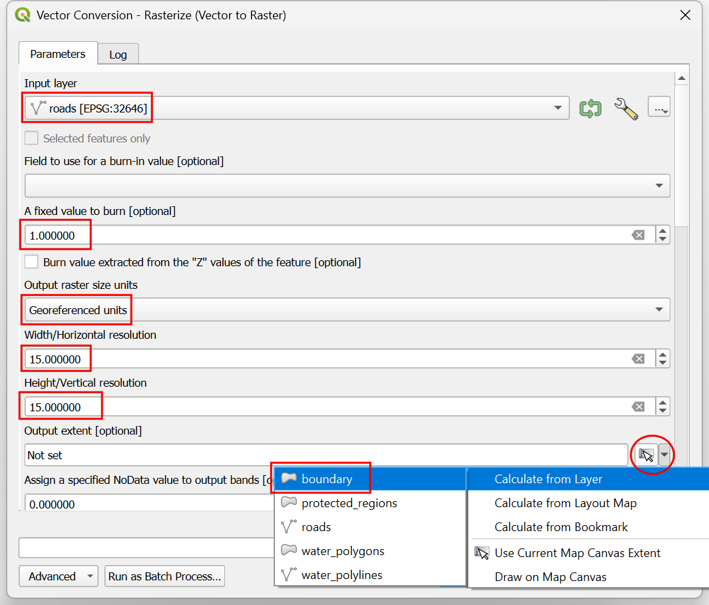
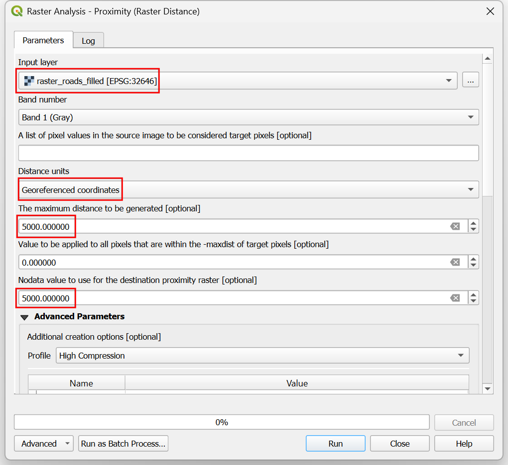
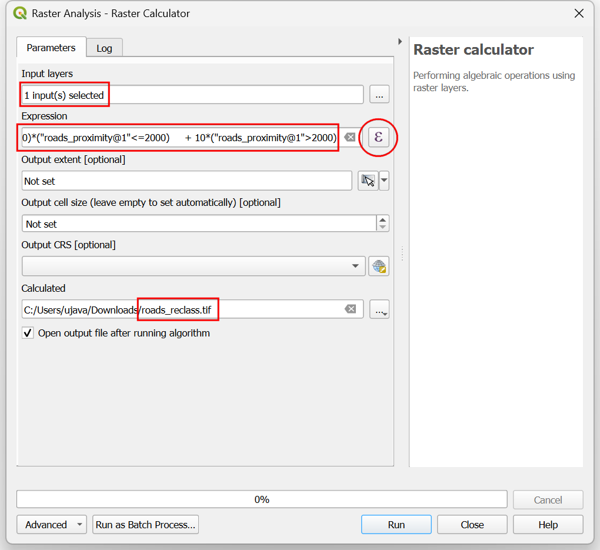

Ujaval Gandhi
Ujaval GandhiAnálisis de Sobreposición Multicriterio (QGIS3)¶
El análisis de sobreposición ponderado multicriterio es el proceso de asignación de áreas en base a una variedad de atributos que las áreas seleccionadas deberían poseer. A pesar de que esta es una operación común en SIG, es mejor realizada en el espacio ráster usando un enfoque basado en cuadrícula (grid).
Nota
Sobreposiciones Vector vs Ráster
You can do the overlay analysis on vector layers using geoprocessing tools such as buffer, dissolve, difference and intersection. This method is ideal if you wanted to find a binary suitable/non-suitable answer and you are working with a handful of layers. You can review our video tutorial on Locating A New Bicycle Parking Station using Multicriteria Overlay Analysis for a step-by-step guide on this approach.
Trabajar en el espacio raster le da una clasificación de la adecuación - no sólo el sitio más adecuado. También le permite combinar fácilmente cualquier cantidad de capas de entrada y asignar diferentes pesos a cada criterio. En general, éste es el enfoque preferido para conveniencia de sitio.
Este tutorial recorre el flujo de trabajo típico para realizar un análisis de conveniencia de sitio - convirtiendo datos vector fuente a los rasters apropiados, re-clasificándolos y realizando las operaciones matemáticas.
Vista general de la tarea¶
En este tutorial, identificaremos las áreas convenientes para desarrollo, que son
Cercanas a caminos, y
Alejadas de cuerpos de agua, y
No están en regiones protegidas.

Obtener los datos¶
Usaremos capas de datos vector de OpenStreetMap (OSM). OSM es una base de datos global de datos de mapa base libremente disponible. Geofabrik provee archivos shape actualizados diariamente de los conjuntos de datos OpenStreetMap.
We will be using the OSM data layers for the state of Assam in India. Geofabrik India shapefiles were downloaded, reprojected to a UTM projection, clipped to the state boundary and packaged in a single GeoPackage file. You can download a copy of the geopackage from the link below:
Fuente de Datos: [GEOFABRIK]
Procedimiento¶
Navegue al archivo
assam.gpkgdescargado en el Navegador QGIS. Expándalo y arrastre cada una de las 5 cadas individuales de datos a la pantalla de mapa. Verá que carga las capasboundary,roads,protected_regions,water_polygonsywater_polylinesen el panel Capas.

El primer paso en el análisis de superposición es convertir cada capa de datos en ráster. Una consideración importante es que todos los rásters deben tener la misma extensión. Utilizaremos la capa
boundarycomo extensión para todos los raster. Vaya a . Busque y localice el algoritmo . Haga doble clic para ejecutarlo.

In the Vector Conversion - Rasterize (vector to raster) dialog, select
roadsas the Input layer. We want to create an output raster where pixel values are 1 where there is a road and 0 where there are no roads. Enter1as the A fixed value to burn. The input layers are in a projected CRS with meters are the unit. SelectGeoferenced unitsas the Output raster size units. We will set the resolution of the output raster to be 15 meters. Select15as both Width/Horizontal resolution and Height/Vertical resolution. Next, click the arrow next to Output extent and select .

Desplácese hacia abajo hasta encontrar la Parámetros Avanzados y seleccione el perfil
Alta Compresiónpara aplicar la compresión. Esto generará un archivo raster comprimido de menor tamaño después de ejecutar la herramienta. La aplicación de la compresión sin pérdidas es muy recomendable cuando se trabaja con datos ráster.

Establezca el ráster de salida :guilabel: Rasterizado como
raster_roads.tify haga clic en :guilabel: Ejecutar`.

Once the processing finishes, you will see a new layer raster_roads loaded in the Layers panel. The raster has pixel values 1 for pixels which intersected with the roads. All other pixels are set as NoData values. These nodata values are problematic because This is important because when raster calculator (which we will use later) encounters a pixel with nodata value in any layer, it sets the output to nodata as well, resulting is wrong output. We will fill these nodata values with the value 0. Search for and locate the algorithm. Double-click to launch it.
Select
raster_roadsas the Raster input and choose0as the Fill value. Scroll down to find the Advanced Parameters and select the profileHigh Compressionto apply the compression. Set the Output raster asraster_roads_filled.tifand click Run.

Once the processing finishes, you will see the new layer
raster_roads_filledloaded in the Layers panel. This raster has values 1 for roads and 0 for no roads. If the layer is not visualized correctly, you can click the Open the Layer Styling Panel and set the Min to0and Max to1.

Repeat steps 3-8 for the other 3 vector layers
protected_regions,water_polylinesandwater_polygonslayers. You need to rasterize and fill the nodata cells for these layers. If you want to run these steps manually, you can configure the processing algorithm dialog, run the algorithm and once the algorithm finishes, switch to the Parameters tab and just change the input and output layer names. You can also run each algorithm on all 4 layers in a single step using Batch Processing. See the Procesamiento por Lotes usando el Marco de Procesamiento (QGIS3) tutorial to learn more. Once you are done, you should have 4 raster layers and generate the corresponding raster layersraster_roads_filled,raster_protected_regions_filled,raster_water_polylines_filledandraster_water_polygons_filled. You will notice that we have 2 water related layers - both representing water. We can merge them to have a single layer representing water areas in the region. Search for and locate algorithm in the Processing Toolbox. Double-click to launch it.

Seleccione las capas
raster_water_polygonsyraster_water_polylinesutilizando el botón … como Capas de Entrada. Introduzca la siguiente expresión utilizando el botón ε. Mantenga el resto de opciones predeterminadas y guarde la capa de salida con el nombreraster_water_merged.tify haga clic en Ejecutar`.
"raster_water_polygons_filled@1" + "raster_water_polylines_filled@1"
El ráster resultante fusionado tendrá píxeles con valor 1 para todas las áreas con agua. Pero notará que hay algunas regiones donde había tanto un polígono de agua como una polilínea agua. Esas áreas tendrán píxeles con valor 2 - lo que no es correcto. Podemos corregir esto con una expresión simple. Abra de nuevo el algoritmo .

Select
raster_water_mergedlayer using … button as an Input Layer. Enter the following expression using ε button. Keep all the other options as default and save the output layer with the nameraster_water_filled.tifand click Run.
"raster_water_merged@1" > 0
The resulting layer
raster_water_fillednow has pixels with only 0 and 1 values.

Ahora tenermos capas que representan píxeles camino y agua, podemos generar rásters de proximidad. Estos son también conocidos como distancias Euclideanas - donde cada píxel en el ráster de salida representa la distancia al píxel más cercano en el ráster de entrada. Este ráster resultante luego puede ser usado para determinar áreas apropiadas que están dentro de cierta distancia de la entrada. Busque y localice el algoritmo . Doble-clic para iniciarlo.

In the Raster Analysis - Proximity (Raster Distance) dialog, select
raster_roads_filledas the Input layer. ChooseGeoreferenced coordinatesas the Distance units. As the input layers are in a projected CRS with meters as the units, enter5000(5 kilometers) as the Maximum distance to be generated. For all pixels that are more than the maximum distance away - we will set their values to be 5000 as well. So set the Nodata value to use for the destination proximity raster value to5000.

Puede expandir la etiqueta :guilabel: Parámetros Avanzados y seleccionar el perfil
Alta Compresiónpara aplicar la compresión. Asigne al archivo de salida el nombreroads_proximity.tify haga clic en Ejecutar.

Nota
It may take upto 15 minutes for this process to run. It is a computationally intensive algorithm that needs to compute distance for each pixel of the input raster.
Una vez que se complete el procesamiento, se agregará una nueva capa
roads_proximityal panel Capas. Para visualizarla mejor, cambiemos el estilo predeterminado. Clic en el botón Abrir el panel de Estilo de Capa en el panel Capas. Cambie el valor Max a5000bajo Gradiente de color.

Repeat the Proximity (Raster Distance) algorithm for the
raster_water_filledlayer with same parameters and name the outputwater_proximity.tif. If you click around the resulting raster, you will see that it is a continuum of values from 0 to 5000. To use this raster in overlay analysis ,we must first re-classify it to create discrete values. Open algorithm again.

Queremos dar un puntaje mayor a píxeles que están cerca de caminos. Así que usemos el siguiente esquema.
0-1000m –> 100
1000-2000m –> 50
>2000m –> 10
Select
roads_proximitylayer using … button as an Input Layer. Enter the following expression that applies the above criteria on the input. Keep all the other options as default and save the output layer with the nameroads_reclass.tifand click Run.100*("roads_proximity@1"<=1000) + 50*("roads_proximity@1">1000)*("roads_proximity@1"<=2000) + 10*("roads_proximity@1">2000)
Una vez que finalice el proceso de reclasificación, se agregará una nueva capa
roads_reclassal panel Capas. Esta capa sólo tiene 3 valores diferentes, 10, 50 y 100 que indican la conveniencia relativa de los píxeles con respecto a la distancia de los caminos. Abra de nuevo el algoritmo .
Repita el proceso de reclasificación para la capa
water_proximity. Aquí el esquema será a la inversa, donde los píxeles que están más lejos del agua deberían tener un puntaje mayor.
0-1000m –> 10
1000 -2000m —> 50
>2000m –> 100
Select
water_proximitylayer using … button as an Input Layer. Enter the following expression hat applies the above criteria on the input. Keep all the other options as default and save the output layer with the namewater_reclass.tifand click Run.100*("water_proximity@1">2000) + 50*("water_proximity@1">1000)*("water_proximity@1"<=2000) + 10*("water_proximity@1"<1000)
Now we are ready to do the final overlay analysis. Recall that our criteria for determining suitability is as follows - close to roads, away from water and not in a protected region. Open . Select
roads_reclass,water_reclass,raster_protected_regions_filledlayers using … button as Input Layers. Use ε button to enter the following expression that applies these criteria. Keep other parameters as default. Name the outputoverlay.tifand click Run.
(("roads_reclass@1" + "water_reclass@1")/2) *("raster_protected_regions@1" != 1 )
Nota
In this example, we are giving equal weight to both road and water proximity. In real-life scenario, you may have multiple criteria with different importance. You can simulate that by multiplying the rasters with appropriate weights in the above expression. For example, if proximity to roads is twice as importance as proximity away from water, instead of (("roads_reclass@1" + "water_reclass@1")/2), you can use the expression ((2*"roads_reclass@1" + "water_reclass@1")/3).
Once the processing finishes, the resulting raster
overlaywill be added to the Layers panel. The pixel values in this raster range from 0 to 100 - where 0 is the least suitable and 100 is the most suitable area for development. Let’s clip the results to the boundary layer. Open algorithm.

In the Raster Extraction - Clip Raster by Mask Layer dialog, select
overlayas the Input layer andboundaryas the Mask layer.

Scroll down to find the Advanced Parameters and select the profile
High Compressionto apply the compression. Save the Clipped (mask) layer asoverlay_clipped.tifand click Run.

Once the processing finishes, the final output layer
overlay_clippedwill be added to the Layers panel. Click the Open the Layer Styling panel button in the Layers panel and select theSingleband pseudocolorrenderer.

Set the Interpolation to
Discreteand choose theSpectralcolor ramp.

Click on the default label values next to each color and enter appropriate labels.

The labels will also appear as the legend under the
overlay_clippedlayer. This is our final map showing the site suitability according to the chosen criteria.

If you want to give feedback or share your experience with this tutorial, please comment below. (requires GitHub account)